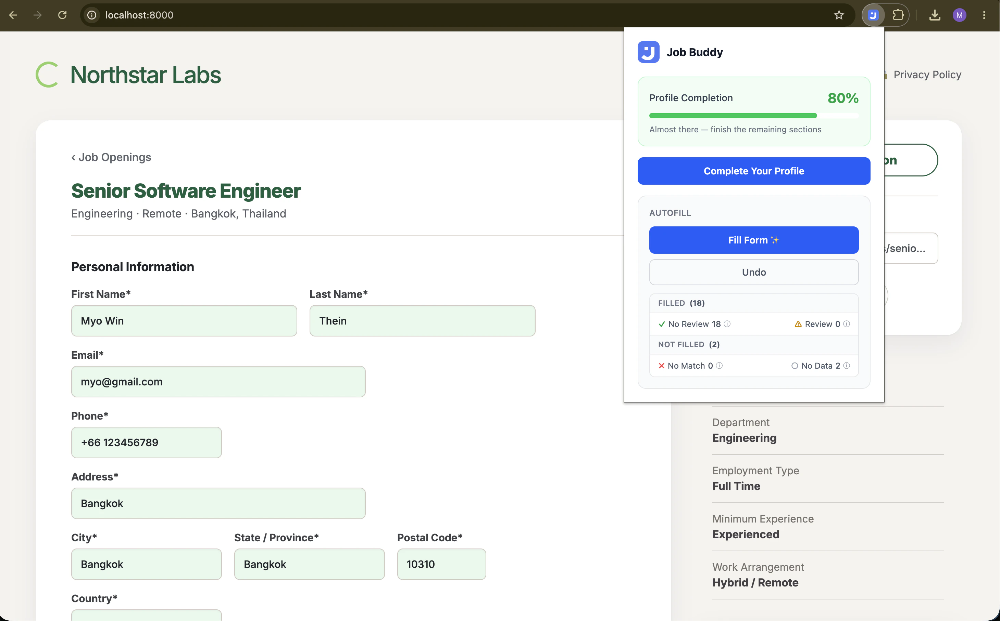
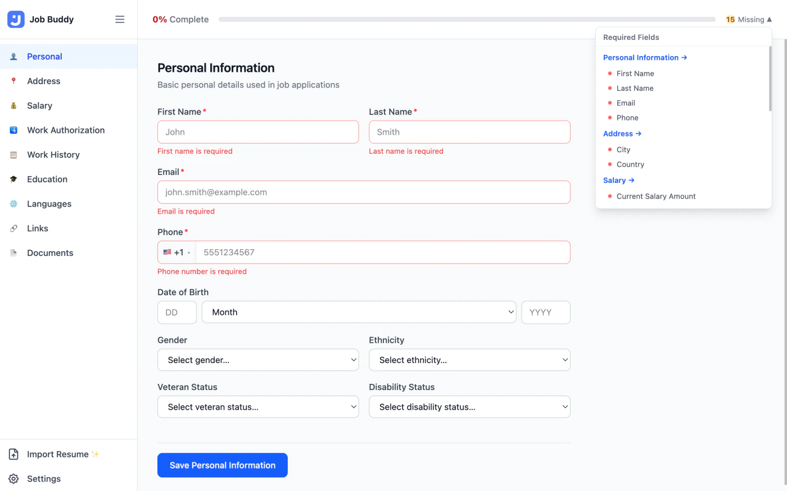
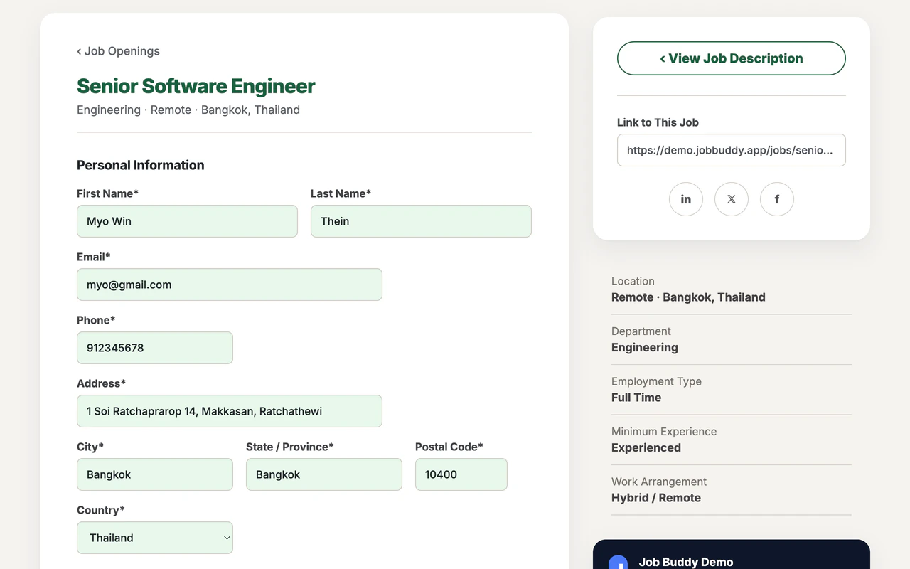
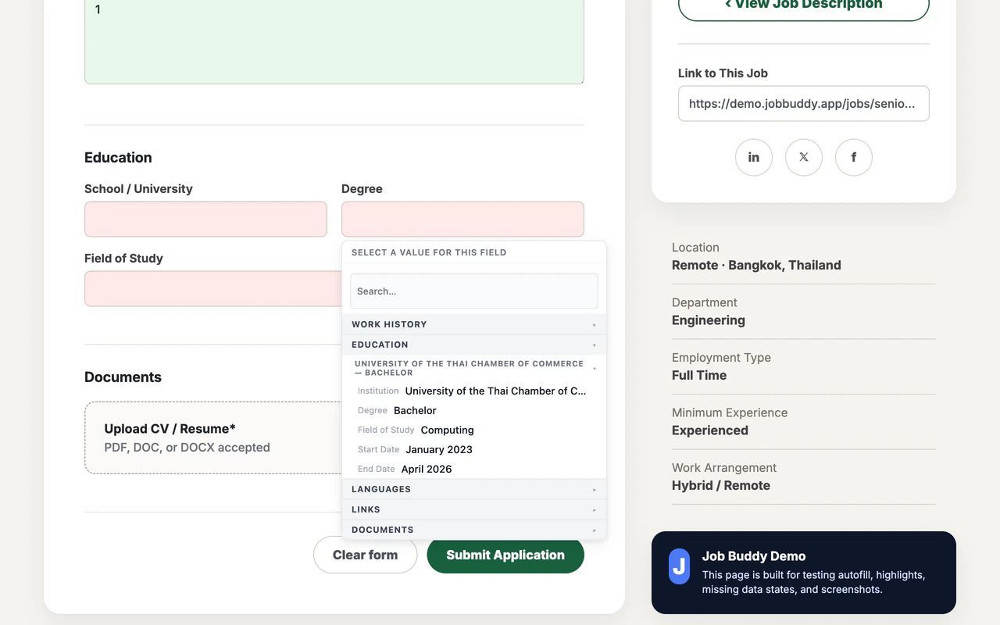
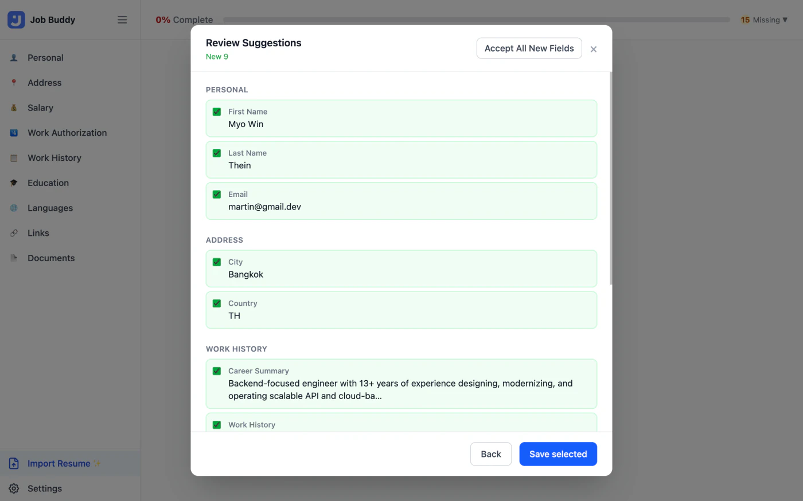
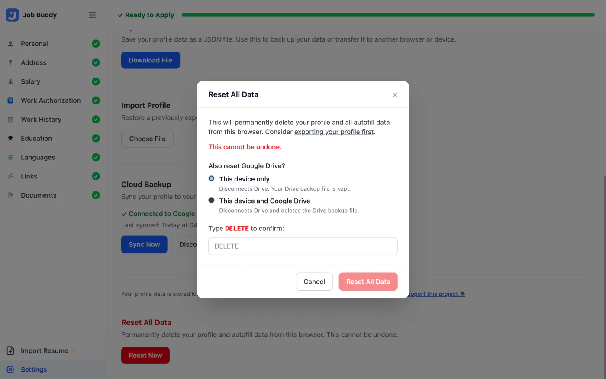

Set up your profile once. Job Buddy reads any application form, matches every field to your profile, and fills what it can, with color-coded confidence on every answer.

What the colours mean
Green
High confidence, filled automatically
Yellow
Medium confidence, worth a glance
Red
Low confidence, pick from your profile
Gray
Field matched but profile is empty
How it works
Fill in your details once: name, address, work history, education, salary expectations, work authorization per country, and more. Or upload your résumé and Job Buddy reads it, pulling your roles, education, and contact details into a review screen.

Visit any job application page. Click the Job Buddy icon and press Fill Form. The extension scans every field, runs it through a four-layer matching pipeline, and fills what it can confidently.

Click any highlighted field to see your profile options in a quick overlay. Correct a field and Job Buddy remembers that mapping for next time. Undo everything with one click.

Features
Workday, Greenhouse, Lever, and custom ATS forms. Job Buddy handles the quirks of each.
Learned mappings → HTML autocomplete → dictionary exact match → fuzzy text comparison. Every layer has a confidence score, and the highest-confidence win is always chosen.
Native inputs, textareas, selects, ARIA comboboxes, contenteditable fields, React-Select dropdowns, click-to-open listboxes, and date inputs. All supported out of the box.
Correct a field via the overlay and Job Buddy records that mapping for that site. Confirm it twice and it's promoted to top priority. Future visits fill that field automatically at high confidence.
Upload a PDF or DOCX and Gemini reads your résumé end-to-end, pulling out your work history, education, skills, and contact details into a field-by-field review. Nothing saves until you confirm.
Optionally sync your profile, including learned mappings, to a private folder in your own Google Drive. Restore to any machine instantly. Your data, your Drive, your control.
Per-country salary expectations, per-country work authorization and visa status, structured international phone numbers, and ISO country/currency lists. Built for job seekers applying globally.
Upload a PDF or DOCX and Gemini reads it end-to-end, pulling your work history, education, contact details, and links into a review screen. Hyperlinks come directly from the PDF annotation layer, so your LinkedIn and portfolio URLs arrive exactly as written.

Job Buddy has no servers. Your profile lives in your browser's local storage and goes nowhere unless you explicitly opt in.
All profile data is stored in chrome.storage.local on your device. Job Buddy makes no network requests by default.
Zero analytics. Zero telemetry. No cookies, no third-party trackers, no usage data sent anywhere. Ever.
Every line of code is on GitHub under the MIT License. Read it, fork it, audit it. You don't have to take our word for anything.
Cloud Backup, résumé import, and autofill assist are optional and off by default. They only activate if you explicitly enable them.
See it in action
